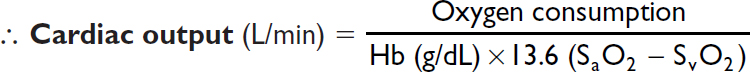
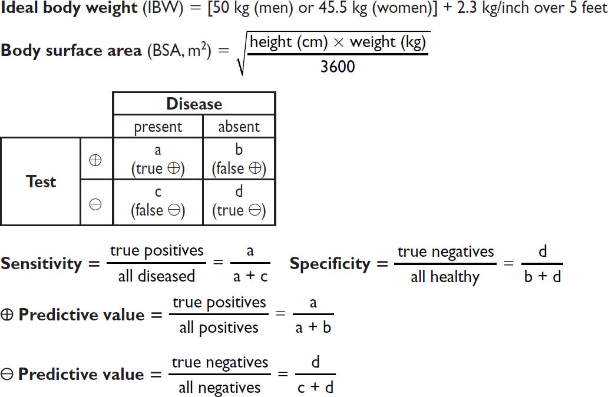

Drug |
Class |
Dose |
|
per kg |
average |
||
Pressors, Inotropes, and Chronotropes |
|||
Phenylephrine |
α1 |
10–300 μg/min |
|
Norepinephrine |
α1 >β1 |
1–40 μg/min |
|
Vasopressin |
V1 |
0.01–0.1 U/min (usually <0.04) |
|
Epinephrine |
α1, α2, β1, β2 |
2–20 μg/min |
|
Isoproterenol |
β1, β2 |
0.1–10 μg/min |
|
Dopamine |
D β, D α, β, D |
0.5–2 μg/kg/min 2–10 μg/kg/min >10 μg/kg/min |
50–200 μg/min 200–500 μg/min 500–1000 μg/min |
Dobutamine |
β1 >β2 |
2–20 μg/kg/min |
50–1000 μg/min |
Milrinone |
PDE |
± 50 μg/kg over 10 min then 0.25–0.75 μg/kg/min |
3–4 mg over 10 min then 20–50 μg/min |
Vasodilators |
|||
Nitroglycerin |
NO |
5–500 μg/min |
|
Nitroprusside |
NO |
0.25–10 μg/kg/min |
10–800 μg/min |
Labetalol |
α1, β1, and β2 blocker |
20–80 mg q10min or 10–120 mg/h |
|
Fenoldopam |
D |
0.1–1.6 μg/kg/min |
10–120 μg/min |
Clevidipine |
CCB |
1–32 mg/h |
|
Epoprostenol |
vasodilator |
2–20 ng/kg/min |
|
Antiarrhythmics |
|||
Amiodarone |
K et al. (Class III) |
150 mg over 10 min, then 1 mg/min × 6 h, then 0.5 mg/min × 18 h |
|
Lidocaine |
Na channel (Class IB) |
1–1.5 mg/kg then 1–4 mg/min |
100 mg then 1–4 mg/min |
Procainamide |
Na channel (Class IA) |
17 mg/kg over 60 min then 1–4 mg/min |
1 g over 60 min then 1–4 mg/min |
Ibutilide |
K channel (Class III) |
1 mg over 10 min, may repeat × 1 |
|
Propranolol |
β blocker |
0.5–1 mg q5min then 1–10 mg/h |
|
Esmolol |
β1 >β2 blocker |
500–1000 μg/kg then 50–200 μg/kg/min |
20–40 mg over 1 min then 2–20 mg/min |
Verapamil |
CCB |
2.5–5 mg over 1–2′, repeat 5–10 mg in 15–30′ prn 5–20 mg/h |
|
Diltiazem |
CCB |
0.25 mg/kg over 2 min reload 0.35 mg/kg × 1 prn then 5–15 mg/h |
20 mg over 2 min reload 25 mg × 1 prn then 5–15 mg/h |
Adenosine |
purinergic |
6 mg rapid push; if no response: 12 mg → 12–18 mg |
|
Sedation |
|||
Morphine |
opioid |
1–30 (in theory, unlimited) mg/h |
|
Fentanyl |
opioid |
50–100 μg then 50–800 (? unlimited) μg/h |
|
Propofol |
anesthetic |
1–3 mg/kg then 0.3–5 mg/kg/h |
50–200 mg then 20–400 mg/h |
Dexmedetomidine |
α2 agonist |
1 μg/kg over 10 min → 0.2–0.7 μg/kg/h |
|
Diazepam |
BDZ |
1–5 mg q1–2h then q6h prn |
|
Midazolam |
BDZ |
0.5–2 mg q5min prn; 0.02–0.1 mg/kg/h or 1–10 mg/h |
|
Lorazepam |
BDZ |
0.01–0.1 mg/kg/h |
|
Naloxone |
opioid antag. |
0.4–2 mg q2–3min to total of 10 mg |
|
Flumazenil |
BDZ antag. |
0.2 mg over 30 sec then 0.3 mg over 30 sec prn may repeat 0.5 mg over 30 sec to total of 3 mg |
|
Miscellaneous |
|||
Aminophylline |
PDE |
5.5 mg/kg over 20 min then 0.5–1 mg/kg/h |
250–500 mg then 10–80 mg/h |
Octreotide |
somatostatin analog |
50 μg then 50 μg/h |
|
Glucagon |
hormone |
3–10 mg IV slowly over 3–5 min then 3–5 mg/h |
|
Mannitol |
osmole |
1.5–2 g/kg over 30–60 min repeat q6–12h to keep osm 310–320 |
|
(Adapted from ACLS 2005 Guidelines)
The following tables of spectra of activity for different antibiotics are generalizations.
Sensitivity data at your own institution should be used to guide therapy.
Penicillins |
||
Generation |
Properties |
Spectrum |
Natural (penicillin) |
Active vs. many GPC, GPR, anaerobes (not Bacteroides), some Gram ⊖ coccobacilli & Gram ⊖ diplococci |
Most streptococci, many enterococci, Listeria, C. acnes, Pasteurella, Actinomyces, syphilis |
Anti-staph (eg, nafcillin) |
Active vs. PCNase-producing Staph Little activity vs. Gram ⊖ |
Staphylococci (except MRSA) Streptococci |
Amino (eg, ampicillin) |
Penetrate porin channel of Gram ⊖ Not stable against PCNases |
PCN plus E. coli, Proteus, H. influenzae, Salmonella, Shigella |
Extended (eg, piperacillin) |
Penetrate porin channel of Gram ⊖ More resistant to PCNases |
Most GNR incl. Enterobacter, Pseudomonas, Serratia |
β-lact. inhib. (eg, sulbactam, clavulanate) with PCN derivative |
Inhibits some plasma-mediated β-lactamases |
Adds staph (not MRSA), most PCN-R anaerobes, & some GNR (H. flu, M. cat, some enterics); intrinsic activity against Acinetobacter |
Cephalosporins |
||
Resistant to most penicillin b-lactamases. No activity vs. enterococci. |
||
Generation |
Spectrum |
Indications |
1st (eg, cefazolin) |
Most GPC (incl. staph & strep, not MRSA); some GNR (incl. E. coli, Proteus, Klebsiella) |
Used for surgical Ppx & skin infxns |
2nd (eg, cefuroxime, cefotetan) |
↓ activity vs. GPC, ↑ vs. GNR. 2 subgroups: Resp: H. influenzae & M. catarrhalis GI/GU: ↑ activity vs. B. fragilis |
PNA/COPD flare Abdominal infxns |
3rd (eg, ceftriaxone, ceftazidime) |
Broad activity vs. GNR (not ESBL), streptococci, & some anaerobes. Ceftazidime active vs. Pseudomonas, less vs. strep |
PNA, sepsis, meningitis |
4th (eg, cefepime) |
↑ resistance to β-lactamases (incl. Enterobacter) |
Similar to 3rd gen. MonoRx for nonlocalizing febrile neutropenia |
5th (eg, ceftaroline) |
Only class of cephalosporin with MRSA activity. GN activity similar to ceftriaxone. NOT active vs. Pseudomonas. |
MRSA. Not 1st line for MRSA bacteremia. |
Combination (eg, ceftolozane-tazobactam, ceftazidime- avibactam) |
MDR GNRs, incl. Pseudomonas. Ceftaz-avi has activity vs. some carbapenemases. |
Complicated UTIs, complicated intra-abdominal infections. |
Other Beta-Lactams |
||
Class |
Properties |
Spectrum |
Carbapenems (eg, imipenem) |
Resistant to most β-lactamases |
Most Gram ⊕ & ⊖, incl. anaerobes; not MRSA or VRE |
Monobactams (aztreonam) |
Active vs. Gram ⊖ but not Gram ⊕ |
Gram ⊖ bacterial infxn in Pt w/ PCN or Ceph allergy |
Other Antibiotics |
|
Antibiotic |
Spectrum |
Vancomycin |
Gram ⊕ bacteria incl. MRSA, PCNase-producing pneumococci and enterococci (except VRE) |
Linezolid |
GPC incl. MRSA & VRE (check susceptibility for VRE) |
Daptomycin |
|
Quinolones |
GNR & atypicals. Levo and esp moxi ↑ activity vs. Gram ⊕. |
Aminoglycosides |
GNR. Synergy w/ cell-wall active abx (β-lactam, vanco) vs. GPC. ↓ activity in low pH (eg, abscess). No activity vs. anaerobes. |
Macrolides |
GPC, some respiratory Gram ⊖, atypicals |
TMP/SMX |
Most enteric GNR, Staph incl CA-MRSA, Stenotrophomonas, Nocardia, Toxo, Pneumocystis |
Clindamycin |
Most Gram ⊕ (except enterococci) & anaerobes (increasing resistance, especially GI) |
Metronidazole |
Almost all anaerobic Gram ⊖, most anaerobic Gram ⊕, some protozoa (Entamoeba, Trichomonas, et al.) |
Doxycycline |
Rickettsia, Ehrlichia, Anaplasma, Chlamydia, Mycoplasma, Nocardia, Lyme; many Staph and GNR |
Tigecycline |
Many GPC incl. MRSA & VRE; most GNR incl. ESBL but not Pseudomonas or Proteus; most anaerobes |
CARDIOLOGY
Hemodynamic Parameters |
Normal Value |
Mean arterial pressure |
70–100 mmHg |
Heart rate (HR) |
60–100 bpm |
Right atrial pressure (RA) |
≤6 mmHg |
Right ventricular (RV) |
systolic 15–30 mmHg diastolic 1–8 mmHg |
Pulmonary artery (PA) |
systolic 15–30 mmHg mean 9–18 mmHg diastolic 6–12 mmHg |
Pulmonary capillary wedge pressure (PCWP) |
≤12 mmHg |
Cardiac output (CO) |
4–8 L/min |
Cardiac index |
2.6–4.2 L/min/m2 |
Stroke volume |
60–120 mL/contraction |
Stroke volume index |
40–50 mL/contraction/m2 |
Systemic vascular resistance (SVR) |
800–1200 dynes × sec/cm5 |
Pulmonary vascular resistance (PVR) |
120–250 dynes × sec/cm5 |
“Rule of 6s” for PAC: RA ≤6, RV ≤30/6, PA ≤30/12, WP ≤12. Nb 1 mmHg = 1.36 cm water or blood.
Fick cardiac output
Oxygen consumption (L/min) = CO (L/min) × arteriovenous (AV) oxygen difference
CO = oxygen consumption/AV oxygen difference
Oxygen consumption must be measured (can estimate w/ 125 mL/min/m2, but inaccurate)
AV oxygen difference = Hb (g/dL) × 10 (dL/L) × 1.36 (mL O2/g of Hb) × (SaO2–SMVO2)
SaO2 is measured in any arterial sample (usually 93–98%)
SMVO2 (mixed venous O2) is measured in RA, RV, or PA (assuming no shunt) (nl ~75%)

Assessment of RV function (Circ 2017;136:314)
PAPi = Pulmonary artery pulsatility index = [PA systolic – PA diastolic] / RA pressure ≤0.9 predicts RV failure in acute MI; <1.85 predicts RV failure after LVAD
Shunts
Valve equations
Simplified Bernoulli: Pressure gradient (∇P) = 4 × v2 (where v = peak flow velocity)
Continuity (conservation of flow): Area1 × Velocity1 = A2 × V2 (where 1 & 2 different points)
Chest Imaging (CXR & CT) Patterns |
||
Pattern |
Pathophysiology |
Ddx |
Consolidation |
Radiopaque material in air space & interstitium patent airway → “air bronchograms” |
Acute: water (pulm. edema), pus (PNA), blood Chronic: neoplasm (BAC, lymphoma), aspiration, inflammatory (COP, eosinophilic PNA), PAP, granuloma (TB/fungal, alveolar sarcoid) |
Ground glass (CT easier than CXR) |
Interstitial thickening or partial filling of alveoli (but vessels visible) |
Acute: pulm. edema, infxn (PCP, viral, resolving bact. PNA) Chronic: ILD w/o fibrosis: acute hypersens., DIP/RB, PAP w/ fibrosis: IPF |
Septal lines Kerley A & B |
Radiopaque material in septae |
Cardiogenic pulm. edema, interstitial PNA viral, mycoplasma, lymphangitic tumor |
Reticular |
Lace-like net (ILD) |
ILD (esp. IPF, CVD, bleomycin, asbestos) |
Nodules |
Tumor Granulomas Abscess |
Cavitary: Primary or metastatic cancer, TB (react. or miliary), fungus, Wegener’s, RA septic emboli, PNA Noncavitary: any of above + sarcoid, hypersens. pneum., HIV, Kaposi’s sarcoma |
Wedge opac. |
Peripheral infarct |
PE, cocaine, angioinv. aspergillus, Wegener’s |
Tree-in-bud (best on CT) |
Inflammation of small airways |
Bronchopneumonia, endobronchial TB/MAI, viral PNA, aspiration, ABPA, CF, asthma, COP |
Hilar fullness |
↑ LN or pulm. arteries |
Neoplasm (lung, mets, lymphoma) Infxn (AIDS); Granuloma (sarcoid/TB/fungal) Pulmonary hypertension |
Upper lobe |
n/a |
TB, fungal, sarcoid, hypersens. pneum., CF, XRT |
Lower lobe |
n/a |
Aspiration, bronchiect., IPF, RA, SLE, asbestos |
Peripheral |
n/a |
COP, IPF & DIP, eos PNA, asbestosis |
CXR in heart failure
• ↑ cardiac silhouette (in systolic dysfxn, not in diastolic)
• Pulmonary venous hypertension: cephalization of vessels (vessels size >bronchi in upper lobes), peribronchial cuffing (fluid around bronchi seen on end → small circles), Kerley B lines (horizontal 1- to 2-cm lines at bases), ↑ vascular pedicle width, loss of sharp vascular margins, pleural effusions (~75% bilateral)
• Pulmonary edema: ranges from ground glass to consolidation; often dependent and central, sparing outer third (“bat wing” appearance)
Dead space = lung units that are ventilated but not perfused
Intrapulmonary shunt = lung units that are perfused but not ventilated
A-a gradient = PAO2 – PaO2 [normal A-a gradient ≈ 4 + (age/4)]
Minute ventilation (VE) = tidal volume (VT) × respiratory rate (RR) (nl 4–6 L/min)
Tidal volume (VT) = alveolar space (VA) + dead space (VD)
Modified Child-Turcotte-Pugh (CPS) Scoring System |
|||
|
Points Scored |
||
|
1 |
2 |
3 |
Ascites |
None |
Easily controlled |
Poorly controlled |
Encephalopathy |
None |
Grade 1 or 2 |
Grade 3 or 4 |
Bilirubin (mg/dL) |
<2 |
2–3 |
>3 |
Albumin (g/dL) |
>3.5 |
2.8–3.5 |
<2.8 |
PT (sec >control) or INR |
<4 <1.7 |
4–6 1.8–2.3 |
>6 >2.3 |
Classification |
|||
|
A |
B |
C |
Total points |
5–6 |
7–9 |
10–15 |
1-y survival |
100% |
80% |
45% |
NEPHROLOGY
Anion gap (AG) = Na – (Cl + HCO3) (normal = [alb] × 2.5; typically 12 ± 2 mEq)
Delta-delta (ΔΔ) = [Δ AG (ie, calc. AG – expected) / Δ HCO3 (ie, 24 – measured HCO3)]
Urine anion gap (UAG) = (UNa + UK) – UCl
HEMATOLOGY
Peripheral Smear Findings (also see Photo Inserts) |
|
Feature |
Abnormalities and Diagnoses |
Size |
normocytic vs. microcytic vs. macrocytic → see below |
Shape |
Anisocytosis → unequal RBC size; poikilocytosis → irregular RBC shape acanthocytes = spur cells (irregular sharp projections) → liver disease Bite cells (removal of Heinz bodies by phagocytes) → G6PD deficiency echinocytes = burr cells (even, regular projections) → uremia, artifact Pencil cell → long, thin, hypochromic–very common in adv. iron deficiency Rouleaux → hyperglobulinemia (eg, multiple myeloma) Schistocytes, helmet cells → MAHA (eg, DIC, TTP/HUS), mechanical valve Spherocytes → HS, AIHA; sickle cells → sickle cell anemia Stomatocyte → central pallor appears as curved slit → liver disease, EtOH Target cells → liver disease, hemoglobinopathies, splenectomy Tear drop cells = dacryocytes → myelofibrosis, myelophthisic anemia, megaloblastic anemia, thalassemia |
Intra- RBC findings |
Basophilic stippling (ribosomes) → abnl Hb, sideroblastic, megaloblastic Heinz bodies (denatured Hb) → G6PD deficiency, thalassemia Howell-Jolly bodies (nuclear fragments) → splenectomy or functional asplenia (eg, advanced sickle cell) Nucleated RBCs → hemolysis, extramedullary hematopoiesis |
WBC findings |
Blasts → leukemia, lymphoma; Auer rods → acute myelogenous leukemia Hypersegmented (>5 lobes) PMNs: megaloblastic anemia (B12/folate def.) Pseudo-Pelger-Huët anomaly (bilobed nucleus, “pince-nez”) → MDS Toxic granules (coarse, dark blue) and Döhle bodies (blue patches of dilated endoplasmic reticulum) → (sepsis, severe inflammation) |
Platelet |
Clumping → artifact, repeat plt count # → periph blood plt count ~10,000 plt for every 1 plt seen at hpf (100×) Size → MPV (mean platelet volume) enlarged in ITP |
(NEJM 2005;353:498)
Heparin for Thromboembolism |
|
80 U/kg bolus 18 U/kg/h |
|
PTT |
Adjustment |
<40 |
bolus 5000 U, ↑ rate 300 U/h |
40–49 |
bolus 3000 U, ↑ rate 200 U/h |
50–59 |
↑ rate 150 U/h |
60–85 |
no Δ |
86–95 |
↓ rate 100 U/h |
96–120 |
hold 30 min, ↓ rate 100 U/h |
>120 |
hold 60 min, ↓ rate 150 U/h |
(Modified from Chest 2008;133:141S)
Heparin for ACS |
|
60 U/kg bolus (max 4000 U) 12 U/kg/h (max 1000 U/h) |
|
PTT |
Adjustment |
<40 |
bolus 3000 U, ↑ rate 100 U/h |
40–49 |
↑ rate 100 U/h |
50–75 |
no Δ |
76–85 |
↓ rate 100 U/h |
86–100 |
hold 30 min, ↓ rate 100 U/h |
>100 |
hold 60 min, ↓ rate 200 U/h |
(Modified from Circ 2007;116:e148 & Chest 2008;133:670)
✓ PTT q6h after every Δ (t. of heparin ~90 min) and then qd or bid once PTT is therapeutic
✓ CBC qd (to ensure Hct and plt counts are stable)
(Annals 1997;126:133; Archives 1999;159:46) or, go to www.warfarindosing.org
Warfarin-heparin overlap therapy
• Indications: when failure to anticoagulate carries ↑ risk of morbidity or mortality (eg, DVT/PE, intracardiac thrombus)
• Rationale: (1) Half-life of factor VII (3–6 h) is shorter than half-life of factor II (60–72 h);
∴ warfarin can elevate PT before achieving a true antithrombotic state
(2) Protein C also has half-life less than that of factor II;
∴ theoretical concern of hypercoagulable state before antithrombotic state
• Method: (1) Therapeutic PTT is achieved using heparin
(2) Warfarin therapy is initiated
(3) Heparin continued until INR therapeutic for ≥2 d and ≥4–5 d of warfarin (roughly corresponds to ~2 half-lives of factor II or a reduction to ~25%)
Common Warfarin-Drug Interactions |
|
Drugs that ↑ PT |
Drugs that ↓ PT |
Amiodarone Antimicrobials: erythromycin, ? clarithro, ciprofloxacin, MNZ, sulfonamides Antifungals: azoles Acetaminophen, cimetidine, levothyroxine |
Antimicrobials: rifampin CNS: barbiturates, carbamazepine, phenytoin (initial transient ↑ PT) Cholestyramine |
ENDOCRINOLOGY
Examples of Various Cosyntropin Stimulation Test Results |
|||
0′ |
30′ |
60′ |
Interpretation |
5.3 |
15.5 |
23.2 |
Normal stimulation test |
1.5 |
13.3 |
21.1 |
Acute central AI (eg, apoplexy or CNS bleed). Can look normal. |
1.2 |
1.5 |
2.0 |
1° AI (eg, Addisons or adrenal bleed). Flat or minimal stim. |
0.8 |
10.0 |
19.7 |
Acute effect of glucocorticoids: low initial value but stims >threshold |
5.3 |
7.2 |
8.9 |
Chronic 2° AI: some cortisol production and stim, but evidence of adrenal atrophy |
6.7 |
19.5 |
17.2 |
“Early peak” (fast metab): ~5% of Pts peak at 30’ rather than 60’ |
6.3 |
11.5 |
16.2 |
Equivocal test. Can occur due to mild AI, acute illness, liver disease, low cortisol binding protein, renal disease, etc. |
OTHER
